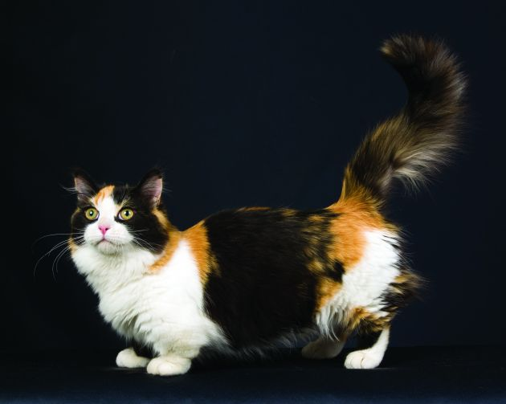
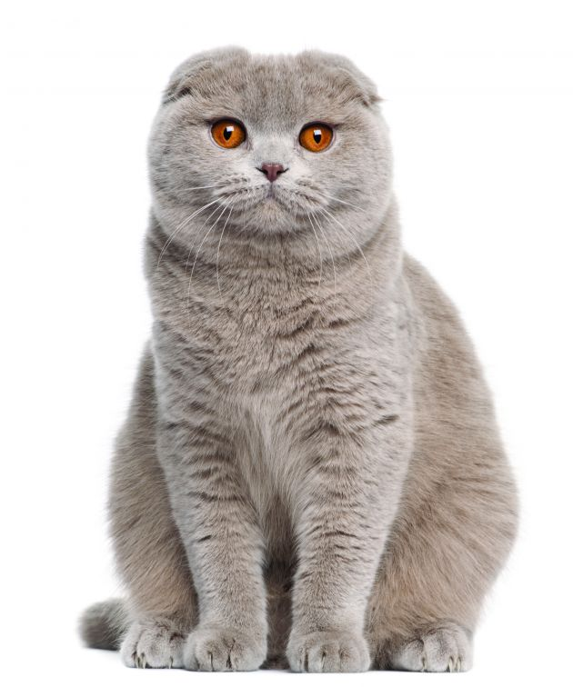
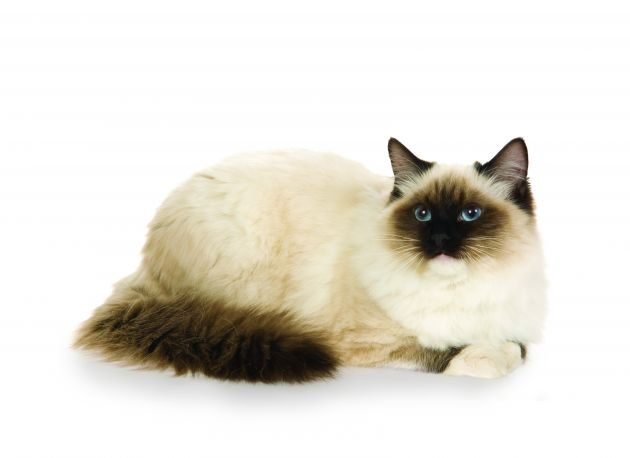

C A T B R E E D S

1. Munchkin
Shortchanged in the leg department doesn’t mean short on intelligence or personality. Friendly and people-oriented, Munchkins make devoted companions, and they get along well with other cats, dogs, and people. They love to wrestle and play with their long-legged feline friends, happily unaware that there’s anything different about them. Despite the short legs, Munchkins run fast, bounding like ferrets and taking corners at full speed.

2. Scottish Fold
Scottish Folds are typically intelligent, sweet-tempered, soft-spoken, and easily adaptable to new people and situations. They are loyal and tend to bond with one person in the household. While they will usually allow others to cuddle and pet them, their primary attachment becomes quickly clear as they single out their chosen human. They thrive on attention, but it must be on their own terms. Despite their devotion, they are not clingy, demanding cats and usually prefer to be near you rather than on your lap. They enjoy a good game of catch the catnip mouse now and then as well, and keep their playful side well into adulthood.

3. Ragdoll
Docile, mild-mannered, and congenial, Ragdolls make ideal indoor companions. One of the nicest features of these cats is their laid-back, sweet personality. They are devotion wrapped in silky fur, loving loyalty with gentle white paws. Very in tune with their human’s routines and emotions, Ragdolls are there when you come home at night to greet you with a leg rub, a forehead kiss, and a big purr. If you’ve had a bad day, they’ll cuddle into your lap to offer gentle comfort so that soon you’ll be smiling again.